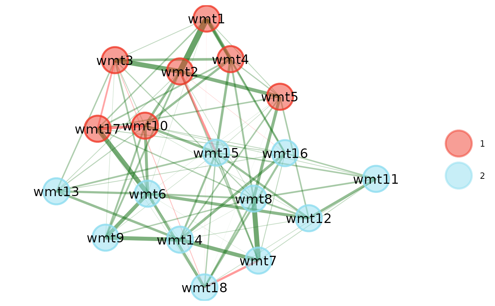

Organizes EGA plots for comparison. Ensures that nodes are placed in the same layout to maximize comparison
Usage
compare.EGA.plots(
...,
input.list = NULL,
base = 1,
labels = NULL,
rows = NULL,
columns = NULL
)Arguments
- ...
Handles multiple arguments:
*EGAobjects --- can be dropped in without any argument designation. The function will search across input to find necessaryEGAnetobjectsgplot.layout--- can be specified usingmode =orlayout =using the name of the layout (e.g.,mode = "circle"will produce the circle layout from gplot.layout). By default, the layout is the same asqgraph
- input.list
List. Bypasses
...argument in favor of using a list as an input- base
Numeric (length = 1). Plot to be used as the base for the configuration of the networks. Uses the number of the order in which the plots are input. Defaults to
1or the first plot- labels
Character (same length as input). Labels for each
EGAnetobject- rows
Numeric (length = 1). Number of rows to spread plots across
- columns
Numeric (length = 1). Number of columns to spread plots down
Value
Visual comparison of EGAnet objects
See also
plot.EGAnet for plot usage in EGAnet
Examples
# Obtain WMT-2 data
wmt <- wmt2[,7:24]
# Draw random samples of 300 cases
sample1 <- wmt[sample(1:nrow(wmt), 300),]
sample2 <- wmt[sample(1:nrow(wmt), 300),]
# Estimate EGAs
ega1 <- EGA(sample1)

ega2 <- EGA(sample2)
 # \donttest{
# Compare EGAs via plot
compare.EGA.plots(
ega1, ega2,
base = 1, # use "ega1" as base for comparison
labels = c("Sample 1", "Sample 2"),
rows = 1, columns = 2
)
# \donttest{
# Compare EGAs via plot
compare.EGA.plots(
ega1, ega2,
base = 1, # use "ega1" as base for comparison
labels = c("Sample 1", "Sample 2"),
rows = 1, columns = 2
)

 # Change layout to circle plots
compare.EGA.plots(
ega1, ega2,
labels = c("Sample 1", "Sample 2"),
mode = "circle"
)# }
# Change layout to circle plots
compare.EGA.plots(
ega1, ega2,
labels = c("Sample 1", "Sample 2"),
mode = "circle"
)# }